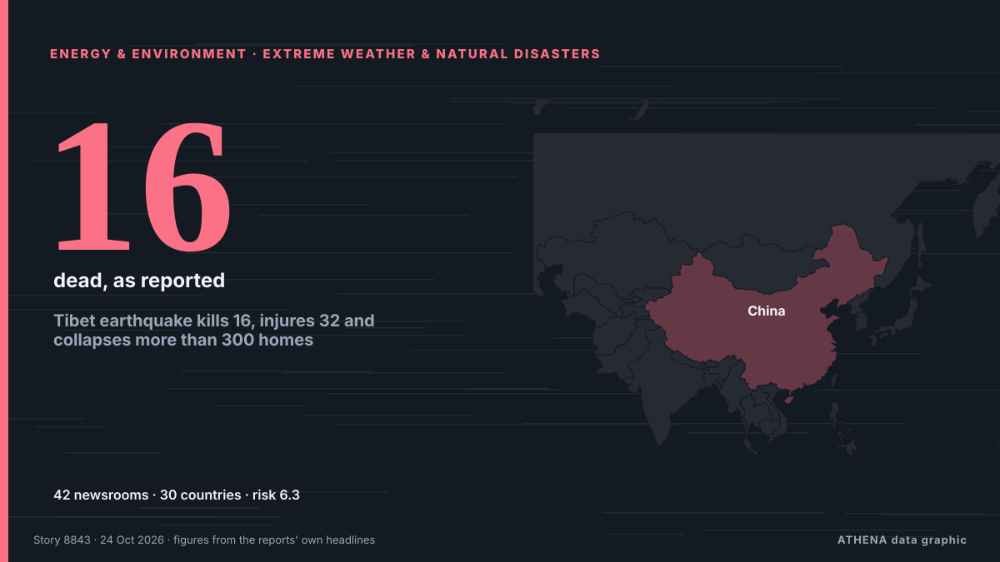

Tibet earthquake kills 16, injures 32 and collapses more than 300 homes

The epicentre was in a sparsely populated, high-altitude county in Nagqu, northern Tibet. de Express Tribune
Informado de forma independiente por 42 medios de 30 países desde el 16 oct; el primero fue Gulf News; la cobertura va perdiendo fuerza. ATHENA califica el riesgo como alto (6.3/10), sobre todo por la gravedad del daño descrito y su alcance geográfico y sectorial. La confianza es del 92 % (alta): lo corroboran 42 medios independientes, con una fiabilidad media de las fuentes del 75 %. Quién lo informó: 4 medios en Pakistán · Pakistan, 3 medios en India, 3 medios en Azerbaiyán · Azerbaijan. La cobertura fue de 16 oct a 23 oct, durante 156 horas.
Por qué importa: Los hechos de energía y recursos afectan a los precios del combustible y la electricidad, la seguridad de suministro y los compromisos climáticos.
Qué ha cambiado: 27 informaciones nuevas de 26 redacciones en las 24 horas hasta el 24 oct.
Primer titular: Earthquake of magnitude 7 kills at least 16 in Tibet
Los titulares se muestran en inglés, tal como se publicaron.
De un vistazo
Seleccionado, puntuado y redactado por la metodología publicada de ATHENA. Ningún editor interviene en eventos concretos. Cómo se elabora ›
| 16 Oct 18:49 UTC | 1 |
|---|---|
| 17 Oct 06:49 UTC | 2 |
| 17 Oct 18:49 UTC | 0 |
| 18 Oct 06:49 UTC | 0 |
| 18 Oct 18:49 UTC | 1 |
| 19 Oct 06:49 UTC | 2 |
| 19 Oct 18:49 UTC | 0 |
| 20 Oct 06:49 UTC | 0 |
| 20 Oct 18:49 UTC | 0 |
| 21 Oct 06:49 UTC | 0 |
| 21 Oct 18:49 UTC | 0 |
| 22 Oct 06:49 UTC | 5 |
| 22 Oct 18:49 UTC | 30 |
| 23 Oct 06:49 UTC | 9 |
| 23 Oct 18:49 UTC | 1 |
| 17 Oct 11:30 UTC | 3.7 |
|---|---|
| 17 Oct 14:00 UTC | 4.4 |
| 19 Oct 15:50 UTC | 4.9 |
| 23 Oct 06:41 UTC | 7.0 |
| 23 Oct 11:25 UTC | 6.5 |
| 24 Oct 01:22 UTC | 6.3 |
Por qué estas cifras
Importancia
Riesgo
Confianza
La cobertura: quién informó y cuándo
titular tal como se publicó · abre el original- Gulf News · Emiratos Árabes Unidos · United Arab EmiratesUAE earthquake: 1.6-magnitude tremor recorded off Dibba in Fujairah
- Gulf News · Emiratos Árabes Unidos · United Arab Emirates5.1-magnitude quake hits southern Iran after UAE tremor
- 24.kg (English) · Kirguistán · KyrgyzstanEarthquake hits Kyrgyzstan
- 24.kg (English) · Kirguistán · KyrgyzstanEarthquake with intensity of magnitude 3 recorded in Kyrgyzstan
- Tehran Times · Irán · IranOver 95 earthquakes hit Iran in a week
- RÚV English · Islandia · IcelandEarthquake of magnitude 5.2 in Bárðarbunga
- The Namibian · NamibiaEarthquake reported near Kamanjab
- Express Tribune · Pakistán · PakistanEarthquake of magnitude 7 strikes China's Tibet
- Times of India · IndiaEarthquake of magnitude 7.0 hits Tibet
- APA (English) · Azerbaiyán · AzerbaijanMagnitude 7 earthquake strikes China
- ABC News (International) · Estados Unidos · United StatesA magnitude 7 earthquake shakes China's Tibet
- The Korea Times · Corea del Sur · South KoreaMagnitude 7 earthquake strikes China's Tibet
- Euronews English · Francia · FranceChina: Panic as 7.0-magnitude earthquake rocks Tibet
- APA (English) · Azerbaiyán · Azerbaijan16 people died in the earthquake in Tibet
- TASS (English) · Rusia · RussiaAt least 16 killed as magnitude 7.0 earthquake strikes Tibet — agency
- Arab News · Arabia Saudí · Saudi ArabiaPowerful earthquake in China’s Tibet collapses hundreds of homes and kills at least 16 people
- France 24 English · Francia · FranceStrong earthquake strikes China’s remote Tibet region
- Channels TV · NigeriaChina Earthquake Kills 16, Injures 32 As 300 Houses Collapse
- Indian Express · IndiaEarthquake of magnitude 7 kills at least 16 in Tibet
- DW English · Alemania · GermanyTibet earthquake kills at least 16 people, injures dozens: state media
- VnExpress International · VietnamAt least 16 dead in Tibet quake: China state media
- MyJoyOnline · GhanaPowerful earthquake hits Tibet killing 16 people, reports say
- CBC News · Canadá · CanadaTibet earthquake kills at least 16
- Al Jazeera English · Catar · QatarTibet rocked by 7.0-magnitude earthquake
- RTÉ News · Irlanda · Ireland16 dead, dozens injured in Tibet earthquake
- Express Tribune · Pakistán · PakistanInjuries in China's Tibet rise to 76 after earthquake, death toll remains at 16
- Times of India · India7-magnitude earthquake strikes Tibet, at least 16 killed - watch
- Business Recorder · Pakistán · PakistanEarthquake of magnitude 7 strikes China's Tibet, killing 16, Xinhua reports
- Euronews English · Francia · FranceMagnitude 7 earthquake strikes Tibet killing at least 16 people and destroying hundreds of homes
- The Guardian · Reino Unido · United KingdomMagnitude-7 earthquake hits Tibet, killing at least 16 and destroying hundreds of homes
- APA (English) · Azerbaiyán · AzerbaijanChina earthquake kills 16, injures 46
- Anadolu Agency (English) · Turquía · Turkey7.0-magnitude earthquake kills 16 in Tibet’s Nagqu City
- The New York Times (World) · Estados Unidos · United StatesPowerful Earthquake in Tibet Kills at Least 16
- CBS News (World) · Estados Unidos · United StatesAt least 16 people killed by powerful earthquake in Tibet
- BBC News · Reino Unido · United KingdomPowerful earthquake hits Tibet killing 16 people, reports say
- Khaama Press · Afganistán · AfghanistanPowerful 7.0-Magnitude Earthquake Rocks Tibet, Killing 16 and Injuring 65
- IOL · Sudáfrica · South AfricaChina orders 'all-out' rescue after Tibet quake kills 16
- Dawn · Pakistán · PakistanChina orders 'all-out' rescue after Tibet quake kills 16
- Asharq Al-Awsat (English) · Arabia Saudí · Saudi ArabiaChina Orders ‘All-Out’ Rescue After Tibet Quake Kills 16
- The Kathmandu Post · NepalEarthquake of magnitude 7 strikes China’s Tibet, killing 16